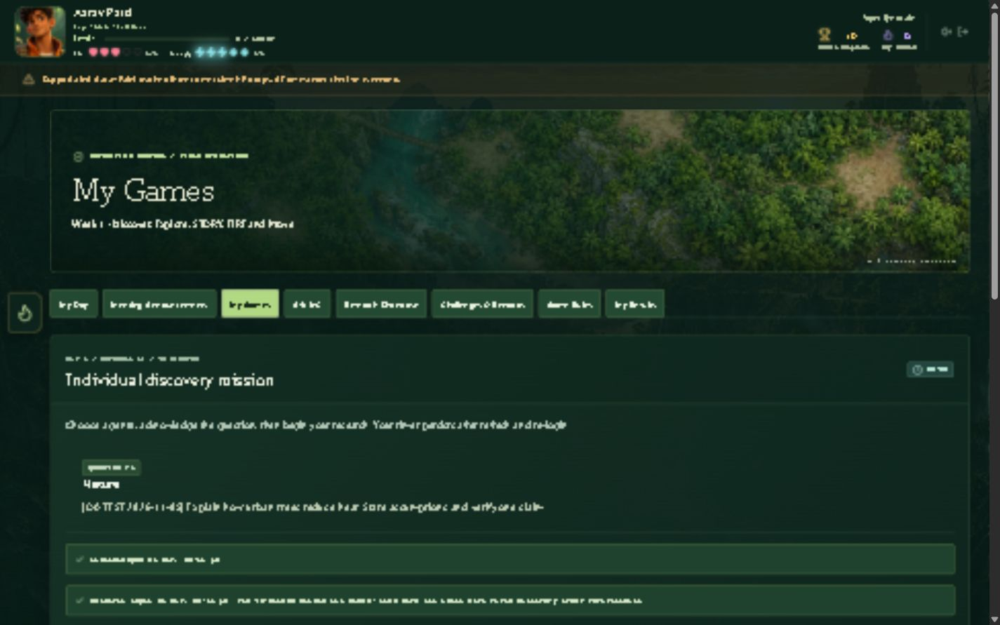
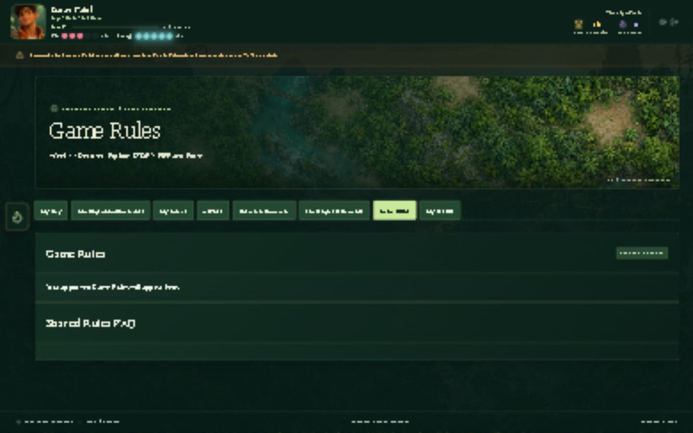

Remediation update: See the fixes and retest addendum: missing Game Rules fixed on the live site; fresh release and pre-release checks executed in an isolated local cohort; release safeguard implemented and tested locally. Counts below describe the original run and are preserved as historical evidence.
Executed 6 November 2026, approximately 19:31–19:47 IST (Asia/Kolkata), against the deployed website. Browser: Codex in-app browser, landscape viewport 1440 × 900. Browser size restored and final account signed out.
23 PASS · 1 FAIL · 3 BLOCKED across 27 scoped checks. The failure is a visible content-readiness gap: approved Game Rules are missing while Day 1 is open. No authentication, role-route isolation, or persistence failure was observed in the executed UI checks. These results do not establish server/API security beyond the browser paths exercised.
A three-persona fixture revision workflow was executed: Gamer submitted a revision, MC reviewed and saved a marker, CC verified the fixture and saved/approved synthetic ratings, and Gamer received VERIFIED status with 16/20 trophies. The CC baseline calculated 18.50/33 and persisted after refresh.
Day 1 was already OPEN, content v1, released by usr_cc02 on 5 November at 20:00:39 IST. A new CC release was not executed. Days 2–5 were DRAFT and unprepared; none was prepared, opened, closed, or otherwise changed. No data was deleted. A full journey beginning with a fresh release remains BLOCKED by the existing test state and the boundary against additional game days.
https://example.com/codewild-qa-test, with fragment #qa-2026-11-06 added to identify the new revision. No genuine external AI conversation accessibility, research content, or learner capability was verified. Verification notes and assessment rationale explicitly state this limitation. Synthetic ratings were reapplied from the original fixture: AI 4,3,2,1,0; human 2,1,4,3,2.Top-level outcomes: Test 1 — PASS for sampled login, role routes and operational permissions; Test 2 — BLOCKED for a fresh release, with the resumed fixture workflow PASS; Test 3 — PASS for exercised submission, status, score and audit persistence; Test 4 — BLOCKED for unreleased Week 1 activity execution, with six negative/locked-control checks PASS and the rules-content check FAIL.
L01–L07; J02–J07; P01–P04; N01–N06. Each PASS below corresponds to an actual browser interaction and observed outcome. Merely opening a dashboard is described as such; operational save/submit claims appear only where executed.
Severity: Medium · Test N08: FAIL · Type: content/readiness; software root cause unconfirmed.
Persona/screen: Gamer → Week 1 → Game Rules (/gamer/week-one-game-rules).
Expected: A player undertaking an open Week 1 activity can read its approved rules. Actual: Screen shows “VERSION PENDING” and “Your approved Game Rules will appear here.” Shared Rules FAQ has no entries. Day 1 is OPEN and supports submission and rewards. Operational impact: the player cannot use the Rules screen to establish approved requirements or resolve reward-policy questions.
Evidence: E03: open Day 1; E29: missing rules. Retest: Karun should publish approved rules through the intended workflow, re-login as Gamer, and verify version, content, FAQ and persistence. Confirm whether publication should be a prerequisite to opening Day 1.
O-01 — Late revision retains on-time reward eligibility; not classified as a defect. The research timer began 5 November 20:16 IST. The new revision was submitted 6 November 19:40 IST. Reverification restored six trophies and the ledger calls this “Verified on-time AI thread.” The original submission was on time. It is unclear whether corrections should inherit original submission eligibility. No approved rules were available to resolve this. Karun should confirm the intended policy and test both an originally on-time correction and an entirely new late submission. Evidence: E27 reward ledger.
O-02 — Identical URL save acknowledges without a new revision; informational. Saving the unchanged original URL with a reason showed “Action recorded by the server” but retained only the initial revision. A distinct fragment URL did create a revision. A clearer “no changes” message may help, but no functional failure is asserted. Evidence: E19 identical URL attempt; E20 distinct revision.
All PASS tests have severity N/A. BLOCKED entries describe coverage limitations, not confirmed defects. Use the supplied credentials privately; passwords are omitted throughout. All routes below are relative to the deployed site. Allow data loading to finish before judging an outcome; several transitions completed after the immediate post-click observation.
| ID / status / severity | Persona and screen; exact steps for Karun | Expected result | Actual observed result and evidence |
|---|---|---|---|
| L01 PASS · N/A | Gamer / sign-in. Enter Aarav’s authorised credentials and press Sign in; wait for dashboard data. | Gamer authenticates to own workspace. | Aarav Patel as Zayn, Viper Syndicate, Gamer map. E02. |
| L02 PASS · N/A | MC / sign-in. Sign out Gamer; enter Vikramaditya’s authorised credentials and submit. Wait for dashboard; open Week 1 and Aarav Review. | MC reaches operational workspace and assigned Gamer evidence. | Commander dashboard and Mission Control accessible; Aarav listed and review operates. E21. |
| L03 PASS · N/A | CC / sign-in. Sign out MC; sign in as Karun and wait for Council overview. Open Week 1 review. | CC reaches council and private assessment functions. | Council overview loaded; CC verification, private ratings and approval executed in J05–J06. E06, E23. |
| L04 PASS · N/A | Gamer / cross-role routes. While authenticated as Gamer, type /centre-command/week-one then /commander/week-one in browser navigation. | Gamer cannot access release, review or private CC scoring UI. | Both redirect to /gamer/dashboard; command controls absent. E12, E13. No direct API mutation was attempted. |
| L05 PASS · N/A | MC / cross-role routes. While authenticated as MC, navigate directly to /centre-command/week-one and /gamer/week-one-games. | MC cannot use CC-only private scoring or impersonate Gamer submission UI. | Both redirect to /commander/dashboard. MC review itself has operational markers but no CC private baseline form. E10, E11. |
| L06 PASS · N/A | CC / role isolation. While authenticated as CC, navigate to /commander/week-one then /gamer/week-one-games. | Role-specific routes remain isolated; CC uses own council functions. | Both redirect to /centre-command/dashboard. E25, E26. |
| L07 PASS · N/A | All roles / Sign out. Press Sign out in each role and wait. Inspect the current protected route before the next sign-in. | Role data disappears and sign-in is required. | Sign-in form replaces workspace after each sign-out; CC protected route no longer shows review data. Final Gamer session also signed out. E09. |
| J01 BLOCKED · N/A | CC / Day release. Inspect Week 1 release table before making changes. | Execute a fresh release of the one chosen Week 1 activity. | Day 1 already OPEN v1; only Close Day 1 offered. Days 2–5 DRAFT, Not prepared. No fresh release executed, no day closed or added. Existing release history records usr_cc02, 5 November 20:00:39. E07; MC history was also opened and read. |
| J02 PASS · N/A | MC / Mission Control. Open Day release history. Expand Day 1 submissions; search Aarav and select Review. | MC sees existing CC release and the assigned Gamer’s state. | Day 1 OPEN v1 and Aarav’s Nature submission visible. Initially VERIFIED 16/20; new revision later PENDING 10/20. E21. |
| J03 PASS · N/A | Gamer / My Games. Use authorised fixture URL with fragment #qa-2026-11-06. Enter explicit synthetic QA revision reason. Click Save revised AI thread; wait; expand Submission revision history. | New revision is recorded with reason/time; prior revision retained; verification is invalidated. | New revision dated 6 November 19:40 IST appears beside original 5 November 20:17 entry. Status PENDING; trophies 16→10; First Discovery pending verification. E20. To repeat, use a unique QA fragment and preserve synthetic labelling. |
| J04 PASS · N/A | MC / Aarav Day 1 review. Open revisions/reward audit. Read new pending revision. Keep Timely SOD / Observed-met; enter evidence describing the revision, original SOD timestamp and synthetic limit. Save marker review. | MC saves an attributable review without granting CC-only verification. | MARKERS event at 19:42 IST, actor usr_mc01; submission remains PENDING 10/20. Event persisted when reopened as CC after refresh. E21, E24. |
| J05 PASS · N/A | CC / Aarav Day 1 review. Confirm revised URL, PENDING and no approved baseline. Set Link access to Accessible/verified; write note explicitly identifying assumed-loaded synthetic evidence, user authorisation and genuine content NOT TESTED. Save link verification. | Authorised fixture decision persists and recalculates rewards. | VERIFIED, 16/20 trophies; rating form becomes available; VERIFY audit at 19:43 IST. E23. This passes workflow processing only, not real URL/content verification. |
| J06 PASS · N/A | CC / private ratings. Enter synthetic AI 4,3,2,1,0 and human 2,1,4,3,2 in the five named criteria. Enter synthetic rationale, Save private baseline ratings, then Approve private baseline. Wait. | Weighted baseline equals 18.50/33; approval and actor/time audit recorded. | 18.50/33; BASELINE APPROVED; private ranking #1 Aarav; ASSESSMENT_SAVED and BASELINE_APPROVED events at 19:43 IST. E22, E23. Math: weighted AI 16/33 and human 21/33; their average is 18.5/33. |
| J07 PASS · N/A | Gamer / My Games. Sign out CC; re-login as Gamer. Open My Games and expand revision/reward histories. | Gamer receives verified fixture result and consistent reward total; private CC ranking stays private. | Revised URL VERIFIED; 16/20 trophies, 5/5 energy; synthetic verification note visible; ledger +1,+5,+4,+6,−6,+6 sums to 16. Original and revised submissions remain. Private baseline/ranking not shown on this activity screen. E27. |
| P01 PASS · N/A | Gamer / My Day and My Games. Read initial saved SOD, EOD, acknowledgement, timer and original submission. Refresh and sign out/re-login. | Previously saved fixture evidence survives session lifecycle. | Original link and VERIFIED 16/20 survive before revision. SOD 5 November 20:15, EOD 20:40, acknowledgement 20:15 and start 20:16 remain visible; timer 00:00 is expired rather than reset. E03, E16. |
| P02 PASS · N/A | Gamer→MC→CC / revision persistence. Submit new revision, sign out, review from MC, then sign in CC. | Saved revision/status/timestamps are shared consistently between roles. | Both commanders see same fragment URL, 6 November 19:40 timestamp, PENDING and 10/20 before verification. MC marker audit survives role change. E20, E21. |
| P03 PASS · N/A | CC / review. After baseline approval, refresh. Reopen submissions, filter Aarav, Review. Expand new MC marker audit. | Saved ratings, approval, calculated score and audit remain. | All ten ratings and rationale retained; BASELINE APPROVED 18.50/33; MC event actor usr_mc01 retained. E24. |
| P04 PASS · N/A | Gamer / My Games. Re-login after CC processing, read final outcome, refresh, wait for loaded data, inspect again. | Final submission/status/rewards and original timer persist. | VERIFIED fragment URL, 16/20 trophies, 5/5 energy, original acknowledgement/start timestamps and 00:00 timer retained after both re-login and refresh. E27, E28. |
| N01 PASS · N/A | Signed out / sign-in. Leave both fields empty; click Sign in. | Incomplete login is blocked with useful error. | Username field focused; “Please fill in this field.” No authentication. E01. |
| N02 PASS · N/A | MC / Day 1 Review. Leave Reason and supporting evidence empty; click Save marker review. | Evidence-free review cannot be submitted. | Required-field validation “Please fill in this field.” No new marker event from this attempt; later valid save created one event. E05. |
| N03 PASS · N/A | CC / private ratings before revision. Replace External AI: Problem framing with 5; click Save private baseline ratings. Restore 4 in form without submitting invalid data. | Rating above 4 is rejected. | “Value must be less than or equal to 4.” Field min=0/max=4. Saved score remains 18.50/33 before revision; no invalid save claimed. E08. |
| N04 PASS · N/A | Gamer / My Games. Retain valid original URL; leave revision reason empty; click Save revised AI thread. | Missing revision reason is blocked. | “Please fill in this field.” Required reason focused; no submitted revision from attempt. E14. |
| N05 PASS · N/A | Gamer / My Games. Enter not-a-url, supply QA validation reason; click Save revised AI thread. | Malformed URL cannot become submitted research evidence. | “Please enter a URL.” Submitted link remains original VERIFIED fixture. Invalid text can be autosaved/restored as a draft; this was distinguished from submission and subsequently replaced by the valid fixture revision. E15. |
| N06 PASS · N/A | Gamer / expedition map, supplementary lock check. Click Level 2: Suggestion box, LOCKED. Inspect dialog launch control. | Preview may open but locked activity cannot launch. | Preview opens; prerequisite “Clear Team message board with at least one star”; Play Suggestion box disabled. No gameplay launched. This tests a map-level prerequisite, not a Week 1 day-release guard. E18. |
| N07 BLOCKED · N/A | Gamer / Week 1 unreleased activity. Inspect available My Games activities and MC/CC release tables. | Attempt a configured Week 1 activity before release and verify submission blocked. | Only Day 1 activity exposed. Days 2–5 DRAFT and unprepared. No configured unreleased activity available to execute; no guessed hidden route/API used or additional day prepared/released. N06 does not substitute for this check. E07. |
| N08 FAIL · Medium | Gamer / Week 1 Game Rules. Follow Game Rules and wait for loaded page. | Approved rules available for active Day 1. | VERSION PENDING; placeholder and empty Shared Rules FAQ. See CW-001. E29. |
| G01 BLOCKED · N/A | CC / real research verification. A genuinely shareable external AI conversation is needed for the Nature research prompt. | Open actual thread, verify access/content, then assess real evidence. | Only synthetic fixture used by explicit user choice. No PASS for genuine access, research quality or learner capability. E23 contains explicit fixture rationale. |
https://example.com/codewild-qa-test#qa-2026-11-06, submitted 6 November 19:40 IST. Original revision preserved.Each detailed row links its original JPG evidence. The images below show the principal observed outcomes.


Evidence captured through browser UI. Captured JPGs have limited text fidelity; exact labels, values and validation messages in this register were read from the live browser accessibility/DOM observations. The final activity observation is also preserved in final-gamer-observed.txt. Full-page images may be tall, particularly expanded audit records. File names E17 and E19 describe intermediate probes; E17 eventually shows successful results navigation and is not evidence of a navigation defect. E19 is the unchanged-URL acknowledgement, not the new revision; E20 is the actual new revision.